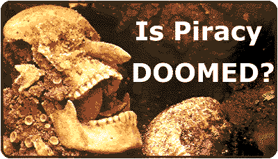

|

"The NET Act
[sends a] warning to would-be Internet pirates--the days of avoiding
prosecution, simply because no money changes hands in the distribution of
illegal software, will soon be over," said Ken Wasch, president of the Software Publishers
Association
The open age of piracy appears to be over. Although no one seemed to
appreciate it, up till now anyone could courier or release anything they wanted
as long as they didn't make any money doing it. The No Electronic Theft (NET),
bill h2265, is going to change all that. The bill has been passed by the US
House and Senate, so once it has the President's signature it will become law.
It's an American law, but it will set a precedent that will certainly effect
electronic copyright laws in other countries in the very near future.
Background on what the law tries to
do
Copyright law would have been rewritten
eventually, but it was the inability to prosecute people who didn't profit from
their crimes that was the driving force behind the NET act. The precedent was
set back in 1994 in United States v. LaMacchia when the court ruled that the
defendant (David LaMacchia, alias GRIMJACK, who ran
Cynosure) could not be tried for conspiring to commit wire fraud.
Grimjack ran a site on two computers at MIT which attracted so many users that
the authorities became aware of its presence. LaMacchia's lawyers tried to get
the judge to dismiss the case "for failure to state an offense"
and after oral arguments with the prosecution, the judge granted the dismissal
noting that "the indictment does not allege that LaMacchia sought
or derived any personal benefit from the scheme to defraud" and that "the
government had improperly resorted to the wire fraud statute as a copyright
enforcement tool." The LaMacchia loophole was born, and it became
impossible to prosecute someone for piracy without evidence that they had
benefited financially from it. Cyberstrike was a good example of the
government's impotence. Last January the FBI made over a dozen arrests, after
spending 8 months gathering evidence. The media made a big deal about it, but
not one arrest resulted in a conviction. Not one. The arrests were covered in
every major newspaper and news site, but I was unable to find a single article
on how effective Cyberstrike actually was. For the government, it's still
embarrassing to spend 8 months and millions of dollars to come up with nothing
but news articles gloating about how the FBI had entered cyberspace to do battle
with the hackers.
Enter the NET act,
a piece of legislation that probably should have passed congress long before,
had it not been for a busy schedule and a poor track record with internet
legislation. The NET act is designed to make it easier for law enforcement
officials to prosecute pirates, and also to modernize copyright laws that went
through their last major renovations in the age of Pong. Software publishers
were major supporters of the NET act, but so was the entertainment industry.
With DVD and ever increasing hard drives Hollywood is right to be concerned
about film pirating. Current production of video tapes is expensive enough that
nobody does it without expecting to make money, but eventually films may be
traded just like software is today, if not by us then by our kids.
Background on what the
law tries to do
It's not pretty. The most significant thing for people in the warez
scene is that it closes the LaMacchia loophole by allowing the government to
define "financial gain" as the "receipt
of anything of value, including the receipt of other copyrighted works."
Pirates of software can now be prosecuted just like people who copy and sell
movies, music, or Rolexes. Below is a summary of what the net act does and what
this means for us.
Revises Federal copyright laws to provide for a
fine and up to five years' imprisonment for infringing a copyright for purposes
of commercial advantage or private financial gain, by reproducing or
distributing, including by electronic means, during any 180-day period, at least
ten copies or phonorecords of one or more copyrighted works which have a total
retail value of more than $2,500.
So if you courier more than $2,500 worth of copyrighted software
during a period of 180 days you can be convicted under the new law.
Extends the statute of limitations for criminal
copyright infringement from three to five years.
That means if you
break the law (see above) in 97 and they find out about it in 2001, then can
still prosecute your sorry ass.
Provides for: (1) up to three years' imprisonment
and fines in infringement cases described above (exclusive of commercial gain
intent considerations); (2) up to six years' imprisonment and a fine for a
second or subsequent felony offense under (1); and (3) up to one year's
imprisonment and a fine for the reproduction or distribution of one or more
copies or phonorecords of one or more copyrighted works with a total retail
value of more than $1,000.
These are the maximum penalties that can be given for breaking the
law, but who knows what judges will actually end up awarding. Prosecutors
usually try to convince judges that pirates aren't the juveniles they appear,
and judges may end up trying to set examples early on, but we'll all have to
wait and see how the first couple unlucky ones fare.
Requires… that victims of the offense be
permitted to submit… a victim impact statement that identifies the victim
and the extent and scope of the victim's injury and loss, including the
estimated economic impact of the offense on that victim.
This means that the victim, ie the software company, will be
encouraged to submit a report that estimates the economic loss they have
suffered as a result.
Directs the U.S. Sentencing Commission to ensure
that the applicable guideline range for a defendant convicted of a crime against
intellectual property is sufficiently stringent to deter such a crime and
adequately reflects consideration of the retail value and quantity of items with
respect to which the crime against intellectual property was committed.
This last part means that the government wants to make sure that
people know it's serious about prosecuting piracy. Sentences (see above) should
be harsh enough that it serves as a warning for others.
What effect this might
have on the scene
There's no way of knowing for sure, but it seems almost certain that the
law will have a major impact on how groups in the warez scene operate. Some
people are definitely going to be arrested, and some people are definitely going
to narc, and the FBI is definitely going to devote more time to tracking pirates
down. It seems almost equally certain that the scene will persist in some
fashion, even if it becomes much smaller and much less active. Everyone is going
to be more conscious of security, but whether the scene will return to its
underground roots remains to be seen. Things are going to be different, and
that's about all we can say for sure.
Stay tuned to scenelink for special features
concerning the NET act including…
An analysis of the WIPO Copyright Treaty designed
to outlaw cracking
A guide to pgp and other ways groups can tighten security
ARTICLES IN THE MEDIA
Banning Web's Robin 11/6
http://www.abcnews.com/sections/scitech/house1106/index.html
Stricter E-theft laws take shape 11/5
http://www5.zdnet.com/zdnn/content/inwo/1105/206340.html
Congress approves copyright bill
http://www.news.com/News/Item/0,4,16550,00.html
SCARE TATCTICS, HOW CORPORATIONS STRETCH
THE TRUTH
The Damages And Potential Legal
Consequences Of Software Piracy
http://www.newstream.com/97-389.shtml
Annually,
software piracy costs the U.S. economy 130-thousand jobs and
11.3-billion-dollars in lost sales
from the video
http://www.newstream.com/rm/97-389.ram
"piracy poses huge risks to the user… they run the risk of
viruses, uh… which are most commonly transmitted via shared disk. A virus
or bug in the software program could easily destroy all the data in your system,
something businesses especially should be scared of.
BSA PRESIDENT ROBERT HOLLEYMAN PRAISES SENATE PASSAGE OF "NET
ACT"
http://www.bsa.org/pressrel/971114.html
The Business Software Alliance commends the Senate for joining the House of
Representatives in its passage of the 'No Electronic Theft Act', affirming that
the 'cop is on the beat' on the Internet.
American Intellectual Property Law Association
http://www.aipla.org/
GOVERNEMT SOURCES
The bill itself
ftp://ftp.loc.gov/pub/thomas/c105/h2265.eh.txt
Status of the bill
http://thomas.loc.gov/cgi-bin/bdquery/z?d105:HR02265:@@@L
Presentation to the Subcommittee on Courts and Intellectual Property
Committee 11/97
http://www.house.gov/judiciary/41105.htm
No Electronic Theft Act Passes House 11/6
http://www.govtech.net/services/news/Nov6news.shtm
Testimony of Sandra A. Sellers, Software Publishers Association, Hearings on
Electronic Copyright Piracy and the No Electronic Theft Act 9/11
http://www.spa.org/gvmnt/tos/piracyfull.htm
The most pervasive form of piracy continues to be softlifting of entire
computer programs, usually of business application software, for business
purposes.
Statement of the Register of Copyrights on H.R. 2265 11/11/97
http://lcweb.loc.gov/copyright/cpypub/2265_stat.html
When
Congress last revised criminal penalties for copyright infringement, the
legislative reports made clear that de minimis copying would not be subject to
the new criminal penalties... At that time, the House Judiciary Committee stated
that the new felony provisions would not apply to "children making copies
for friends as well as other incidental copying of copyrighted works having a
relatively low retail value." We believe a similar distinction is
appropriate here.
Testimony of the Chief Executive Officer SciTech Software on the WIPO
Copyright Treaties Implementation Act (H.R. 2281)
http://www.spa.org/gvmnt/tos/wipo.htm
For a company like SciTech, which channels nearly 100 percent of their profits
into creating new software, piracy does not simply represent lost sales, it
represents lost investments, lost research, and lost jobs. …my company
received threats from an e-mail user who threatened to publish on the Internet
the instructions to disable the timer for SciTech Display Doctor….
THE SPA
Spa's definitions of piracy
http://www.spa.org/piracy/risk.htm
Spa's synopsis of relevant copyright law
http://www.spa.org/piracy/usc.htm
Spa's Seven Warning Signs of Piracy
http://www.spa.org/piracy/seven.htm
Open Letter to FTP Server Operators from Vice President of Intellectual
Property Education and Enforcement of the SPA
http://www.spa.org/piracy/ftpltr.htm
Pirate activity violates the integrity of the Internet
OTHER
David LaMacchia Case Chronology
http://www-swiss.ai.mit.edu:8000/dldf/chronology.html
|